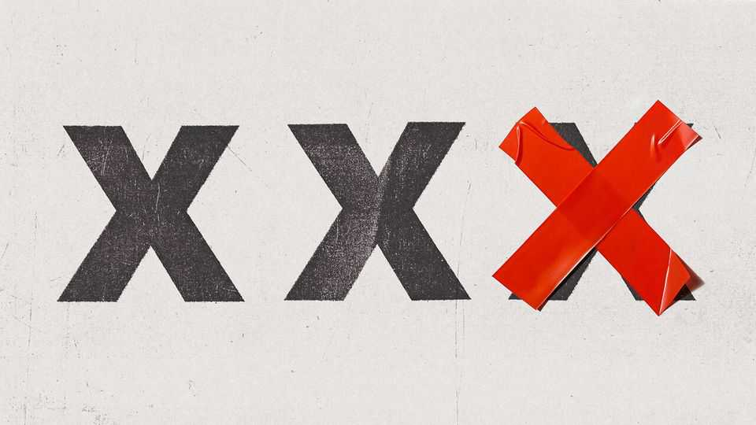

England’s new ban on kinky porn will misfire
Bans make moralists feel good, but will not work as planned

Nov 5th 2026
Pornography depicting strangulation, suffocation, incest and actors pretending to be underage will be banned in England and Wales from November 6th. Few will publicly mourn the loss of videos with titles such as “Choking gets her off”. But free expression means nothing if it does not apply to that which is objectionable.
The government argues that porn is causing real harm, by teaching young people that dangerous practices are not merely normal during sex but expected. It notes with shock a sharp rise in “choking”. In America, Australia and Britain roughly half of sexually active 18- to 35-year-olds report having experienced this; a generation ago it was so niche that pollsters did not bother to ask about it. Mostly it is young men choking young women; sometimes, alarmingly, without prior consent.
For many worried parents, that ends the argument. But reality is muddier than the simple morality tale told by anti-porn campaigners. “Choking” refers to a range of acts, including light pressure on the neck, that some consenting adults find pleasurable. Evidence that porn is what made it so widespread is weak. Young people hear about sex from a variety of sources, including their peers. Under-18s in Britain are already barred from accessing porn sites, but tech-savvy ones have found ways round the age-verification system—and will find ways round the new ban, too.
The idea that the young can be prevented from hearing about kinks is implausible. Some of the acts whose depiction the government is forbidding are so popular that they appear in pop lyrics. Doja Cat, an American rapper with more than 50m monthly listeners on Spotify, offers lyrics such as: “Spank me, slap me, choke me.”
Restrictions on free speech should be rare, narrow and clearly defined. No one doubts that governments should ban child pornography, and that this ban should be vigorously enforced. But in general people should be allowed to film acts that are legal, even if many voters find them repulsive.
Britain’s new law fails the test. It is both broad and unhelpfully vague. The government has not defined the acts that will be illegal to depict. Instead it expects courts to decide on a case-by-case basis. But Britain’s overburdened state will find it hard to police the many difficult-to-judge edge cases that will emerge. In an industry enamoured with terms like “mummy” and “daddy”, how will judges be able to decide what constitutes a depiction of incest? What about whether a hand on a consenting adult’s neck constitutes strangulation? Or when fellatio crosses the line into suffocation? Courts have many more important things to do than to debate such matters, including hearing cases of actual sexual assault.
Since possession of banned content is punishable by up to two years in prison, the new rules will also dilute what it means to be a sex offender. Such an important label loses value when it can be applied both to paedophiles and those harbouring a stepmum fantasy.
Rather than trying ineffectually to prevent the young from learning about risky acts, governments should be ensuring that they are taught about safety, consent and how to talk frankly to prospective partners about what the other person does and does not want. Sex education in most countries is dismal. In Britain it is better, but still has room for improvement. If children do not learn about sex and relationships from reliable sources, they will depend on unreliable ones.
Pornography is an unpopular thing to defend. But Britain has become too willing to ban anything pearl-clutchers dislike, from plastic straws to noisy protests. A ban on kinky porn may please moralists, but it should alarm anyone who cares about freedom of speech or government overreach. ■